Web Server Statistics for adamclaysmith.com
Web Server Statistics for adamclaysmith.com
Program started on Wed, Mar 26 2014 at 12:20 AM.
Analyzed requests from Wed, Feb 26 2014 at 2:37 PM to Tue, Mar 25 2014 at 9:24 PM (27.28 days).
Web Server Statistics for adamclaysmith.comProgram started on Wed, Mar 26 2014 at 12:20 AM.
Analyzed requests from Wed, Feb 26 2014 at 2:37 PM to Tue, Mar 25 2014 at 9:24 PM (27.28 days).
(Go To: Top | General Summary | Monthly Report | Daily Summary | Hourly Summary | Domain Report | Organization Report | Failed Referrer Report | Referring Site Report | Search Word Report | Browser Report | Browser Summary | Operating System Report | Status Code Report | File Size Report | File Type Report | Directory Report | Request Report)
Figures in parentheses refer to the 7-day period ending Mar 26 2014 at 12:20 AM.
Successful requests: 2,083 (70)
Average successful requests per day: 76 (9)
Successful requests for pages: 1,233 (29)
Average successful requests for pages per day: 45 (4)
Failed requests: 794 (14)
Distinct files requested: 13 (5)
Distinct hosts served: 63 (14)
Data transferred: 37.05 megabytes (1.55 megabytes)
Average data transferred per day: 1.36 megabytes (227.12 kilobytes)
(Go To: Top | General Summary | Monthly Report | Daily Summary | Hourly Summary | Domain Report | Organization Report | Failed Referrer Report | Referring Site Report | Search Word Report | Browser Report | Browser Summary | Operating System Report | Status Code Report | File Size Report | File Type Report | Directory Report | Request Report)
Each unit ( ) represents 30 requests for pages or part thereof.
) represents 30 requests for pages or part thereof.
| month | #reqs | #pages | |
|---|---|---|---|
| Feb 2014 | 200 | 116 |  |
| Mar 2014 | 1883 | 1117 |   |
Busiest month: Mar 2014 (1,117 requests for pages).
(Go To: Top | General Summary | Monthly Report | Daily Summary | Hourly Summary | Domain Report | Organization Report | Failed Referrer Report | Referring Site Report | Search Word Report | Browser Report | Browser Summary | Operating System Report | Status Code Report | File Size Report | File Type Report | Directory Report | Request Report)
Each unit () represents 10 requests for pages or part thereof.
| day | #reqs | #pages | |
|---|---|---|---|
| Sun | 277 | 134 |  |
| Mon | 320 | 158 |  |
| Tue | 211 | 129 | |
| Wed | 298 | 86 | |
| Thu | 270 | 127 | |
| Fri | 478 | 408 | |
| Sat | 229 | 191 | |
(Go To: Top | General Summary | Monthly Report | Daily Summary | Hourly Summary | Domain Report | Organization Report | Failed Referrer Report | Referring Site Report | Search Word Report | Browser Report | Browser Summary | Operating System Report | Status Code Report | File Size Report | File Type Report | Directory Report | Request Report)
Each unit () represents 5 requests for pages or part thereof.
| hour | #reqs | #pages | |
|---|---|---|---|
| 0 | 57 | 14 | |
| 1 | 59 | 59 | |
| 2 | 157 | 103 | |
| 3 | 46 | 14 | |
| 4 | 29 | 29 | |
| 5 | 150 | 63 | |
| 6 | 165 | 56 | |
| 7 | 130 | 38 | |
| 8 | 56 | 56 | |
| 9 | 0 | 0 | |
| 10 | 2 | 2 | |
| 11 | 123 | 37 | |
| 12 | 184 | 57 | |
| 13 | 22 | 11 | |
| 14 | 51 | 27 | |
| 15 | 45 | 35 | |
| 16 | 22 | 22 | |
| 17 | 136 | 56 | |
| 18 | 152 | 142 | |
| 19 | 263 | 178 | |
| 20 | 98 | 98 | |
| 21 | 39 | 39 | |
| 22 | 91 | 91 | |
| 23 | 6 | 6 | |
(Go To: Top | General Summary | Monthly Report | Daily Summary | Hourly Summary | Domain Report | Organization Report | Failed Referrer Report | Referring Site Report | Search Word Report | Browser Report | Browser Summary | Operating System Report | Status Code Report | File Size Report | File Type Report | Directory Report | Request Report)
Listing domains, sorted by the amount of traffic.
| #reqs | %bytes | domain |
|---|---|---|
| 2083 | 100% | [unresolved numerical addresses] |
(Go To: Top | General Summary | Monthly Report | Daily Summary | Hourly Summary | Domain Report | Organization Report | Failed Referrer Report | Referring Site Report | Search Word Report | Browser Report | Browser Summary | Operating System Report | Status Code Report | File Size Report | File Type Report | Directory Report | Request Report)
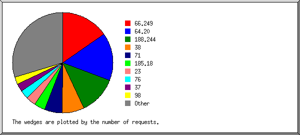
Listing the top 20 organizations by the number of requests, sorted by the number of requests.
| #reqs | %bytes | organization |
|---|---|---|
| 598 | 39.85% | 66.249 |
| 284 | 7.30% | 38 |
| 264 | 16.41% | 64.20 |
| 118 | 9.91% | 71 |
| 102 | 6.38% | 98 |
| 51 | 1.31% | 37 |
| 51 | 2.15% | 206.183 |
| 45 | 1.16% | 199.217 |
| 43 | 1.10% | 192.96 |
| 42 | 1.08% | 198.186 |
| 42 | 1.08% | 173.252 |
| 41 | 1.05% | 64.202 |
| 40 | 1.03% | 208.43 |
| 32 | 0.82% | 166.78 |
| 25 | 1.83% | 82 |
| 24 | 0.85% | 70 |
| 23 | 0.59% | 69 |
| 22 | 0.57% | 54 |
| 22 | 0.46% | 157.55 |
| 21 | 0.54% | 213.251 |
| 193 | 4.54% | [not listed: 21 organizations] |
(Go To: Top | General Summary | Monthly Report | Daily Summary | Hourly Summary | Domain Report | Organization Report | Failed Referrer Report | Referring Site Report | Search Word Report | Browser Report | Browser Summary | Operating System Report | Status Code Report | File Size Report | File Type Report | Directory Report | Request Report)
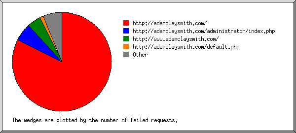
Listing referring URLs, sorted by the number of failed requests.
(Go To: Top | General Summary | Monthly Report | Daily Summary | Hourly Summary | Domain Report | Organization Report | Failed Referrer Report | Referring Site Report | Search Word Report | Browser Report | Browser Summary | Operating System Report | Status Code Report | File Size Report | File Type Report | Directory Report | Request Report)
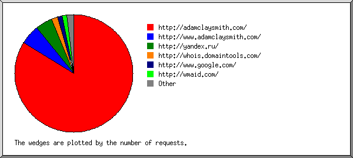
Listing referring sites, sorted by the number of requests.
| #reqs | site |
|---|---|
| 488 | http://adamclaysmith.com/ |
| 74 | http://www.adamclaysmith.com/ |
| 21 | http://whois.domaintools.com/ |
| 18 | http://www.google.com/ |
| 15 | http://www.netcraft.com/ |
| 14 | http://testingforex.com/ |
| 10 | http://adamcallawayconsulting.com/ |
(Go To: Top | General Summary | Monthly Report | Daily Summary | Hourly Summary | Domain Report | Organization Report | Failed Referrer Report | Referring Site Report | Search Word Report | Browser Report | Browser Summary | Operating System Report | Status Code Report | File Size Report | File Type Report | Directory Report | Request Report)
Listing query words, sorted by the number of requests.
| #reqs | search term |
|---|---|
| 18 | http://adamclaysmith.com |
(Go To: Top | General Summary | Monthly Report | Daily Summary | Hourly Summary | Domain Report | Organization Report | Failed Referrer Report | Referring Site Report | Search Word Report | Browser Report | Browser Summary | Operating System Report | Status Code Report | File Size Report | File Type Report | Directory Report | Request Report)
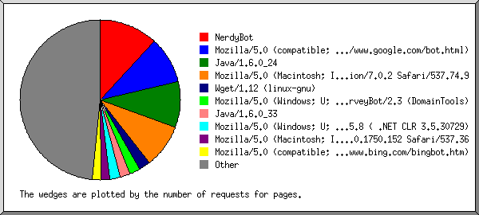
Listing the top 40 browsers by the number of requests for pages, sorted by the number of requests for pages.
| #reqs | #pages | browser |
|---|---|---|
| 252 | 252 | Java/1.6.0_24 |
| 556 | 153 | Mozilla/5.0 (compatible; Googlebot/2.1; +http://www.google.com/bot.html) |
| 43 | 43 | Mozilla/5.0 (Windows NT 5.1) AppleWebKit/537.36 (KHTML, like Gecko) Chrome/31.0.1650.16 Safari/537.36 |
| 42 | 42 | Mozilla/5.0 (Windows NT 6.1; rv:6.0) Gecko/20110814 Firefox/6.0 Google favicon |
| 42 | 42 | facebookexternalhit/1.1 (+http://www.facebook.com/externalhit_uatext.php) |
| 40 | 40 | Mozilla/5.0 (Windows; U; Windows NT 5.1; en-US; rv:1.9.1.8) Gecko/20100202 Firefox/3.5.8 ( .NET CLR 3.5.30729) |
| 37 | 37 | Mozilla/5.0 (X11; Ubuntu; Linux x86_64; rv:11.0) Gecko/20100101 Firefox/11.0 |
| 51 | 34 | Mozilla/4.0 (compatible; http://search.thunderstone.com/texis/websearch/about.html) |
| 34 | 34 | Mozilla/5.0 (Windows NT 6.1; WOW64) AppleWebKit/534.24 (KHTML, like Gecko) Chrome/11.0.696.71 Safari/534.24 |
| 198 | 33 | Mozilla/5.0 (Macintosh; Intel Mac OS X 10_9_1) AppleWebKit/537.36 (KHTML, like Gecko) Chrome/33.0.1750.117 Safari/537.36 |
| 118 | 32 | Mozilla/5.0 (Macintosh; Intel Mac OS X 10_9_2) AppleWebKit/537.74.9 (KHTML, like Gecko) Version/7.0.2 Safari/537.74.9 |
| 30 | 30 | wscheck.com/1.0.0 (+http://wscheck.com/) |
| 28 | 28 | Mozilla/4.0 (compatible; MSIE 7.0b; Windows NT 6.0) |
| 22 | 22 | Mozilla/5.0 (compatible; electricmonk/3.1.1 +https://www.duedil.com/our-crawler/) |
| 22 | 22 | Mozilla/5.0 (compatible; bingbot/2.0; +http://www.bing.com/bingbot.htm) |
| 21 | 21 | Mozilla/5.0 (Windows; U; Windows NT 5.1; en; rv:1.9.0.13) Gecko/2009073022 Firefox/3.5.2 (.NET CLR 3.5.30729) SurveyBot/2.3 (DomainTools) |
| 21 | 21 | Mozilla/4.0 (compatible; MSIE 8.0; Windows NT 5.1; Trident/4.0; |
| 21 | 21 | Mozilla/5.0 (Windows; U; Windows NT 6.0; fr; rv:1.9.0.1) Gecko/2008070208 Firefox/21.0 |
| 21 | 21 | Mozilla/4.0 (compatible; MSIE 7.0; Windows NT 5.1; .NET CLR 1.0.3705; .NET CLR 1.1.4322; Media Center PC 4.0) |
| 21 | 21 | Ruby |
| 20 | 20 | Mozilla/5.0 (X11; Ubuntu; Linux i686; rv:14.0; ips-agent) Gecko/20100101 Firefox/14.0.1 |
| 19 | 19 | Mozilla/5.0 (compatible; MSIE 9.0; Windows NT 6.1; WOW64; Trident/5.0; chromeframe/19.0.1084.52) |
| 18 | 18 | Mozilla/5.0 (Windows NT 6.2; WOW64) AppleWebKit/537.36 (KHTML, like Gecko) Chrome/27.0.1453.116 Safari/537.36 |
| 18 | 18 | Mozilla/4.0 (compatible; MSIE 6.0; Windows 98; Win 9x4.90) |
| 17 | 17 | Mozilla/5.0 (Windows NT 6.1; WOW64) AppleWebKit/537.1 (KHTML, like Gecko) Chrome/21.0.1180.89 Safari/537.1 |
| 96 | 16 | Mozilla/5.0 (Macintosh; Intel Mac OS X 10_8_5) AppleWebKit/537.36 (KHTML, like Gecko) Chrome/33.0.1750.146 Safari/537.36 |
| 15 | 15 | Mozilla/4.0 (compatible; Netcraft Web Server Survey) |
| 15 | 15 | SEOstats 2.1.0 https://github.com/eyecatchup/SEOstats |
| 14 | 14 | Mozilla/5.0 (Windows; U; Windows NT 5.0; es-ES; rv:1.8.0.3) Gecko/20060426 Firefox/1.5.0.3 |
| 14 | 14 | testingforex.com |
| 12 | 12 | Mozilla/5.0 (compatible; NetcraftSurveyAgent/1.0; +info@netcraft.com) |
| 10 | 10 | CATExplorador/1.0beta (sistemes at domini dot cat; http://domini.cat/catexplorador.html) |
| 42 | 8 | Mozilla/5.0 (Macintosh; Intel Mac OS X 10_9_2) AppleWebKit/537.36 (KHTML, like Gecko) Chrome/33.0.1750.117 Safari/537.36 |
| 36 | 6 | Mozilla/5.0 (Linux; Android 4.3; SCH-I535 Build/JSS15J) AppleWebKit/537.36 (KHTML, like Gecko) Chrome/33.0.1750.132 Mobile Safari/537.36 |
| 6 | 6 | CB/Nutch-1.7 |
| 5 | 5 | Mozilla/5.0 (Windows NT 6.1; WOW64; rv:18.0) Gecko/20100101 Firefox/18.0 |
| 5 | 5 | AdnormCrawler www.adnorm.com/crawler |
| 25 | 5 | Mozilla/5.0 (compatible; aiHitBot/2.8; +http://endb-consolidated.aihit.com/) |
| 4 | 4 | Mozilla/4.0 (compatible; MSIE 7.0; Windows NT 5.1) |
| 3 | 3 | Mozilla/4.0 (compatible; MSIE 7.0; Windows NT 6.0; Win64; x64; Trident/5.0; .NET CLR 2.0.50727; SLCC1; .NET CLR 3.5.21022; .NET CLR 3.5.30729; .NET CLR 3.0.30729; .NET4.0C; .NET4.0E) |
| 27 | 12 | [not listed: 8 browsers] |
(Go To: Top | General Summary | Monthly Report | Daily Summary | Hourly Summary | Domain Report | Organization Report | Failed Referrer Report | Referring Site Report | Search Word Report | Browser Report | Browser Summary | Operating System Report | Status Code Report | File Size Report | File Type Report | Directory Report | Request Report)
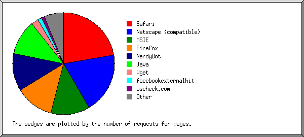
Listing browsers with at least 1 request for a page, sorted by the number of requests for pages.
| # | #reqs | #pages | browser |
|---|---|---|---|
| 1 | 703 | 263 | Netscape (compatible) |
| 2 | 252 | 252 | Java |
| 252 | 252 | Java/1 | |
| 3 | 621 | 211 | Safari |
| 574 | 174 | Safari/537 | |
| 34 | 34 | Safari/534 | |
| 12 | 2 | Safari/9537 | |
| 1 | 1 | Safari/535 | |
| 4 | 201 | 201 | Firefox |
| 62 | 62 | Firefox/3 | |
| 42 | 42 | Firefox/6 | |
| 37 | 37 | Firefox/11 | |
| 21 | 21 | Firefox/21 | |
| 20 | 20 | Firefox/14 | |
| 14 | 14 | Firefox/1 | |
| 5 | 5 | Firefox/18 | |
| 5 | 118 | 118 | MSIE |
| 56 | 56 | MSIE/7 | |
| 23 | 23 | MSIE/8 | |
| 20 | 20 | MSIE/9 | |
| 19 | 19 | MSIE/6 | |
| 6 | 42 | 42 | facebookexternalhit |
| 42 | 42 | facebookexternalhit/1 | |
| 7 | 30 | 30 | wscheck.com |
| 30 | 30 | wscheck.com/1 | |
| 8 | 21 | 21 | Ruby |
| 9 | 15 | 15 | SEOstats |
| 15 | 15 | SEOstats/2 | |
| 10 | 14 | 14 | testingforex.com |
| 11 | 10 | 10 | CATExplorador |
| 10 | 10 | CATExplorador/1 | |
| 12 | 6 | 6 | CB |
| 6 | 6 | CB/Nutch-1 | |
| 13 | 5 | 5 | AdnormCrawler www.adnorm.com |
| 5 | 5 | AdnormCrawler www.adnorm.com/crawler | |
| 14 | 3 | 3 | BlackBerry9000 |
| 3 | 3 | BlackBerry9000/4 |
(Go To: Top | General Summary | Monthly Report | Daily Summary | Hourly Summary | Domain Report | Organization Report | Failed Referrer Report | Referring Site Report | Search Word Report | Browser Report | Browser Summary | Operating System Report | Status Code Report | File Size Report | File Type Report | Directory Report | Request Report)
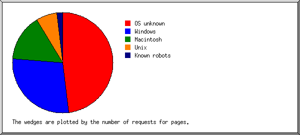
Listing operating systems, sorted by the number of requests for pages.
| # | #reqs | #pages | OS |
|---|---|---|---|
| 1 | 1074 | 634 | OS unknown |
| 2 | 374 | 374 | Windows |
| 191 | 191 | Unknown Windows | |
| 151 | 151 | Windows XP | |
| 18 | 18 | Windows 98 | |
| 14 | 14 | Windows 2000 | |
| 3 | 473 | 93 | Macintosh |
| 4 | 93 | 63 | Unix |
| 93 | 63 | Linux | |
| 5 | 27 | 27 | Known robots |
(Go To: Top | General Summary | Monthly Report | Daily Summary | Hourly Summary | Domain Report | Organization Report | Failed Referrer Report | Referring Site Report | Search Word Report | Browser Report | Browser Summary | Operating System Report | Status Code Report | File Size Report | File Type Report | Directory Report | Request Report)
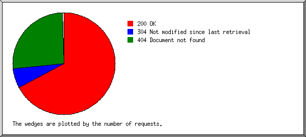
Listing status codes, sorted numerically.
| #reqs | status code |
|---|---|
| 1987 | 200 OK |
| 42 | 206 Partial content |
| 54 | 304 Not modified since last retrieval |
| 794 | 404 Document not found |
(Go To: Top | General Summary | Monthly Report | Daily Summary | Hourly Summary | Domain Report | Organization Report | Failed Referrer Report | Referring Site Report | Search Word Report | Browser Report | Browser Summary | Operating System Report | Status Code Report | File Size Report | File Type Report | Directory Report | Request Report)
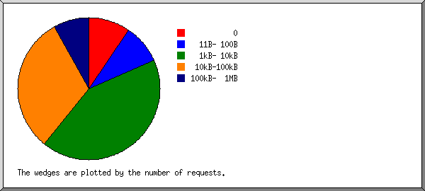
| size | #reqs | %bytes |
|---|---|---|
| 0 | 69 | |
| 1B- 10B | 0 | |
| 11B- 100B | 193 | 0.03% |
| 101B- 1kB | 0 | |
| 1kB- 10kB | 1401 | 32.35% |
| 10kB-100kB | 420 | 67.61% |
(Go To: Top | General Summary | Monthly Report | Daily Summary | Hourly Summary | Domain Report | Organization Report | Failed Referrer Report | Referring Site Report | Search Word Report | Browser Report | Browser Summary | Operating System Report | Status Code Report | File Size Report | File Type Report | Directory Report | Request Report)
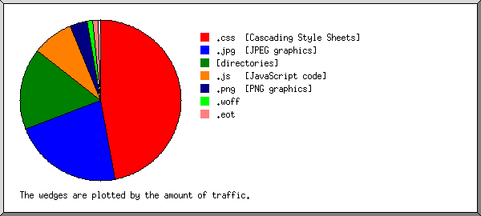
Listing extensions with at least 0.1% of the traffic, sorted by the amount of traffic.
| #reqs | %bytes | extension |
|---|---|---|
| 614 | 53.87% | .css [Cascading Style Sheets] |
| 1233 | 31.01% | [directories] |
| 155 | 10.86% | .js [JavaScript code] |
| 81 | 4.26% | .woff |
(Go To: Top | General Summary | Monthly Report | Daily Summary | Hourly Summary | Domain Report | Organization Report | Failed Referrer Report | Referring Site Report | Search Word Report | Browser Report | Browser Summary | Operating System Report | Status Code Report | File Size Report | File Type Report | Directory Report | Request Report)
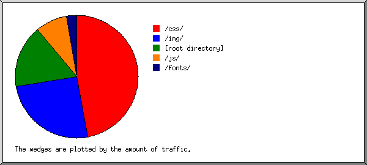
Listing directories with at least 0.01% of the traffic, sorted by the amount of traffic.
| #reqs | %bytes | directory |
|---|---|---|
| 415 | 53.83% | /css/ |
| 1432 | 31.04% | [root directory] |
| 155 | 10.86% | /js/ |
| 81 | 4.26% | /fonts/ |
(Go To: Top | General Summary | Monthly Report | Daily Summary | Hourly Summary | Domain Report | Organization Report | Failed Referrer Report | Referring Site Report | Search Word Report | Browser Report | Browser Summary | Operating System Report | Status Code Report | File Size Report | File Type Report | Directory Report | Request Report)
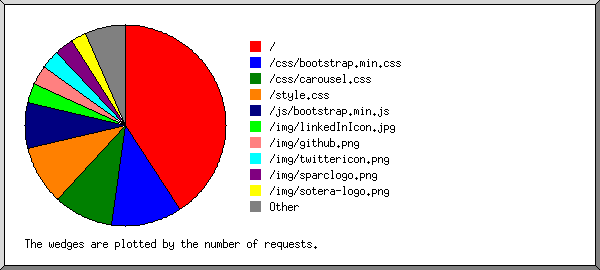
Listing files with at least 20 requests, sorted by the number of requests.
| #reqs | %bytes | last time | file |
|---|---|---|---|
| 1233 | 31.01% | Mar/25/14 9:24 PM | / |
| 21 | 0.54% | Mar/ 1/14 2:00 AM | /?fb_locale=fr_FR |
| 214 | 52.49% | Mar/22/14 11:49 AM | /css/bootstrap.min.css |
| 201 | 1.35% | Mar/22/14 11:49 AM | /css/carousel.css |
| 199 | 0.03% | Mar/22/14 11:49 AM | /style.css |
| 155 | 10.86% | Mar/19/14 12:42 PM | /js/bootstrap.min.js |
| 81 | 4.26% | Mar/ 7/14 5:09 PM | /fonts/glyphicons-halflings-regular.woff |